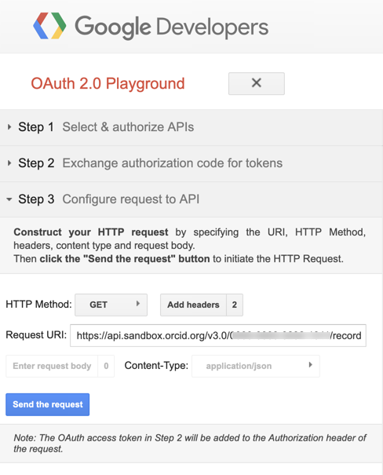

This guide now lives at https://info.orcid.org/hands-on-with-the-orcid-api/ please go there for the latest version. Thank you.
Read the record
Important! Make sure you have added something to your record before going any further. The subsequent calls won't work properly otherwise. Skip back to Add info to your Sandbox record if you are unsure about this.
The next thing we can do with our newly acquired access token is to read the record. This is the next logical step and a useful way of acquiring put-codes that you will need for the PUT step later.
Return to the browser tab for Google Playground. If you didn't keep the tab open, you can re-initialize the session with the URL you saved earlier (Clicking OK on the warning that comes up). Or you can set up for the call again by filling all the relevant fields, making sure they look like the screenshots below:
-
Make sure the configuration has your client ID and client secret

-
below Step 2 you should have your access token filled in
It should either still have the token from earlier or you can fill it in from the previous exercise like so:

-
Beneath Step 3 Click Add headers, enter the values below, then click Add and Close
- Header name:
Accept - Header value:
application/vnd.orcid+xml
The step 3 Configurations should look like the screenshot below:

- Header name:
-
Set the HTTP Method to GET.
-
In the request URI field enter :
https://api.sandbox.orcid.org/v3.0/0000-XXXX-XXXX-XXXX/record
Replace [ORCID ID] with the iD for your Sandbox record, format XXXX-XXXX-XXXX-XXXXNote: the endpoint is the word at the end of the URI. In this case we are reading a summary of the whole record so we end the URL with
/recordas shown above.
-
Click Send the request
In the Request/Response field you should see an XML summary of the whole record. It will look a bit like the example below which shows the first part of the response. If you added something to your record as shown in Add info to your Sandbox record you should have at least one put-code returned as shown below :